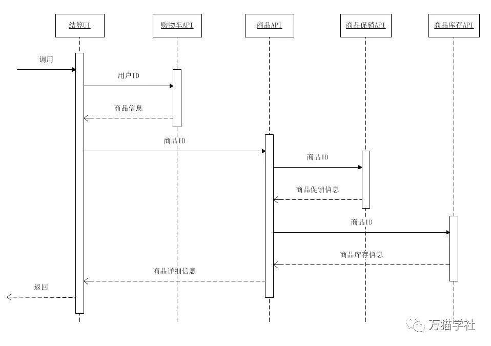
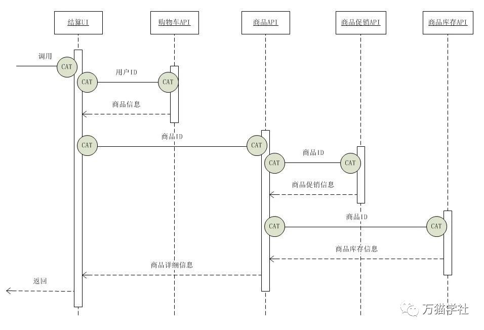

一年一度的双十一购物狂欢节就要到了，又到剁手党们开始表演的时刻了。当我们把种草很久的商品放入购物车以后，点击“结算”按钮时，就来到了买买买必不可少的结算页面了。让我们虚拟一个买买买结算系统，为结算页面提供商品、促销、库存等结算信息，就此系统展开如何在SpringBoot项目中集成CAT调用链。买买买结算系统包含以下4个项目:
时序图如下：

<dependency>
<groupId>com.dianping.cat</groupId>
<artifactId>cat-client</artifactId>
<version>3.0.0</version>
</dependency>创建/data/appdatas/cat/目录，并创建client.xml文件：
<?xml version="1.0" encoding="utf-8"?>
<config xmlns:xsi="http://www.w3.org/2001/XMLSchema" xsi:noNamespaceSchemaLocation="config.xsd">
<servers>
<server ip="127.0.0.1" port="2280" http-port="8080" />
</servers>
</config>注意：把127.0.0.1替换成CAT服务端的IP。
买买买结算系统中一共有5个项目，每个项目都需要配置各自的项目名称。
首先，在每个项目中创建如下文件：
src/main/resources/META-INF/app.properties
然后，在每个项目里添加如下内容：
app.name=buy-buy-buy-checkoutapp.name=buy-buy-buy-cartapp.name=buy-buy-buy-productapp.name=buy-buy-buy-promotionapp.name=buy-buy-buy-store注意：项目名称只能包含英文字母 (a-z, A-Z)、数字 (0-9)、下划线 (_) 和中划线 (-)
在埋点之前，需要先写两个公共类，方便之后埋点时调用。
public class CatContext implements Cat.Context {
private Map<String, String> properties = new HashMap<>();
@Override
public void addProperty(String key, String value) {
properties.put(key, value);
}
@Override
public String getProperty(String key) {
return properties.get(key);
}
@Override
public String toString() {
return "CatContext{"
+ "properties=" + properties + '}';
}
}public class CatHttpConstants {
public static final String CAT_HTTP_HEADER_CHILD_MESSAGE_ID = "DD-CAT-CHILD-MESSAGE-ID";
public static final String CAT_HTTP_HEADER_PARENT_MESSAGE_ID = "DD-CAT-PARENT-MESSAGE-ID";
public static final String CAT_HTTP_HEADER_ROOT_MESSAGE_ID = "DD-CAT-ROOT-MESSAGE-ID";
}使用CAT进行分布式调用链监控，需要修改项目中的代码进行埋点：
那么在买买买结算系统中需要做哪些代码修改呢？看一下时序图的变化就明白了：

第一个埋点，在刚刚接收到请求时，这里使用Filter实现，代码如下：
public class CatServletFilter implements Filter {
@Override
public void init(FilterConfig filterConfig) throws ServletException {
}
@Override
public void doFilter(ServletRequest servletRequest, ServletResponse servletResponse, FilterChain filterChain) throws IOException, ServletException {
HttpServletRequest request = (HttpServletRequest) servletRequest;
CatContext catContext = new CatContext();
catContext.addProperty(Cat.Context.ROOT, request.getHeader(CatHttpConstants.CAT_HTTP_HEADER_ROOT_MESSAGE_ID));
catContext.addProperty(Cat.Context.PARENT, request.getHeader(CatHttpConstants.CAT_HTTP_HEADER_PARENT_MESSAGE_ID));
catContext.addProperty(Cat.Context.CHILD, request.getHeader(CatHttpConstants.CAT_HTTP_HEADER_CHILD_MESSAGE_ID));
Cat.logRemoteCallServer(catContext);
Transaction t = Cat.newTransaction(CatConstants.TYPE_URL, request.getRequestURI());
try {
Cat.logEvent("Service.method", request.getMethod(), Message.SUCCESS, request.getRequestURL().toString());
Cat.logEvent("Service.client", request.getRemoteHost());
filterChain.doFilter(servletRequest, servletResponse);
t.setStatus(Transaction.SUCCESS);
} catch (Exception ex) {
t.setStatus(ex);
Cat.logError(ex);
throw ex;
} finally {
t.complete();
}
}
@Override
public void destroy() {
}
}Filter已经写好了，接下来还需要把Filter注册到SpringBoot中：
@Configuration
public class CatConfiguration {
@Bean
public FilterRegistrationBean catServletFilter() {
FilterRegistrationBean registration = new FilterRegistrationBean();
CatServletFilter filter = new CatServletFilter();
registration.setFilter(filter);
registration.addUrlPatterns("/*");
registration.setName("cat-servlet-filter");
registration.setOrder(1);
return registration;
}
}第两个埋点，在调用API的HttpClient工具类中统一增加代码，以GET方式为例：
public static String doGet(String url) throws IOException {
HttpGet httpGet = new HttpGet(url);
CloseableHttpResponse response = null;
CloseableHttpClient httpClient = HttpClientBuilder.create().build();
String content = null;
Transaction t = Cat.newTransaction(CatConstants.TYPE_CALL, url);
try {
Context ctx = new CatContext();
Cat.logRemoteCallClient(ctx);
httpGet.setHeader(CatHttpConstants.CAT_HTTP_HEADER_ROOT_MESSAGE_ID, ctx.getProperty(Cat.Context.ROOT));
httpGet.setHeader(CatHttpConstants.CAT_HTTP_HEADER_PARENT_MESSAGE_ID, ctx.getProperty(Cat.Context.PARENT));
httpGet.setHeader(CatHttpConstants.CAT_HTTP_HEADER_CHILD_MESSAGE_ID, ctx.getProperty(Cat.Context.CHILD));
response = httpClient.execute(httpGet);
if (response.getStatusLine().getStatusCode() == 200) {
content = EntityUtils.toString(response.getEntity(), "UTF-8");
t.setStatus(Transaction.SUCCESS);
}
} catch (Exception e) {
Cat.logError(e);
t.setStatus(e);
throw e;
} finally {
if (response != null) {
response.close();
}
if (httpClient != null) {
httpClient.close();
}
t.complete();
}
return content;
}以上便是SpringBoot集成CAT调用链的整个实例了，可以灵活应用，更加优雅的集成到实际项目中。
另外，CAT还有很多丰富的功能，可参见官网。